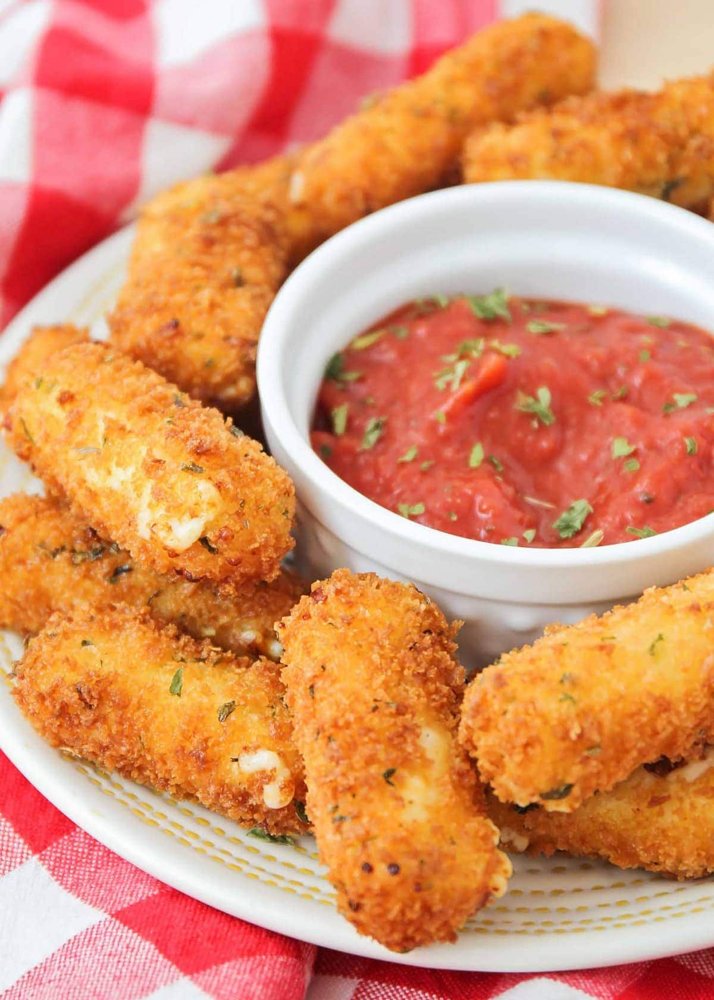

Mozzarella Sticks

Description
These mozzarella sticks with egg roll wrappers are amazing — better than any restaurant's, in my opinion.
Ingredients
- 2 large Eggs
- 2 cups Milk
- 1.5 cups Italian seasoned Bread Crumbs
- 10 egg roll wrappers
- 10 Mozzarella String Cheese Sticks
- 1 quart Vegetable Oil for frying
Steps
- Beat eggs in a mixing bowl. Whisk in milk, then set aside.
- Place bread crumbs into a resealable plastic bag; set aside.
- Separate and lay an egg roll wrapper onto a flat, clean work surface with one of the tips pointed towards you. Moisten the two far edges of the wrapper with water. Place a string cheese stick onto the corner nearest you, then roll it in 1/3 of the way. Fold over the right and left corners, then continue rolling to the end, pressing to seal. Repeat this step with remaining string cheese sticks and egg roll wrappers.
- Heat oil in a deep fryer or large saucepan to 375 degrees F (190 degrees C).
- Dip mozzarella sticks into egg mixture, then toss in bread crumbs.
- Working in batches, fry breaded mozzarella sticks in hot oil until crisp and golden brown, 3 to 4 minutes.